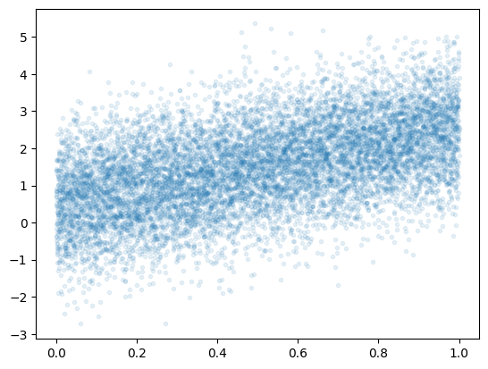
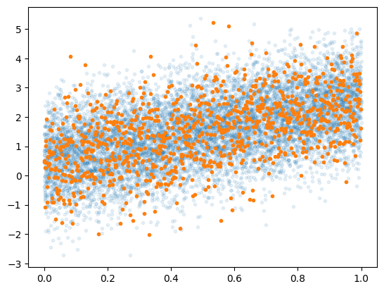
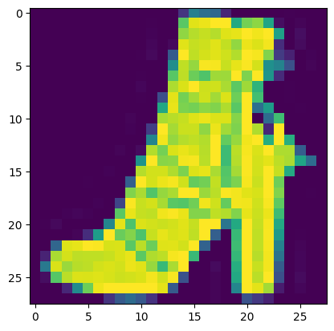
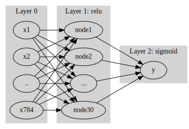

import tensorflow as tf
import matplotlib.pyplot as plt
import numpy as np
import tensorflow.experimental.numpy as tnp[STBDA] 09wk(2): 확률적 경사하강법
해당 강의노트는 전북대학교 최규빈교수님 STBDA2022 자료임
import
tf.config.experimental.list_physical_devices()[PhysicalDevice(name='/physical_device:CPU:0', device_type='CPU')]import graphviz
def gv(s): return graphviz.Source('digraph G{ rankdir="LR"'+ s + ';}')중간고사 관련 잡담
중간고사 3번문제
- 특이한모형: 오버핏이 일어날 수 없는 모형이다.
유의미한 coef: 상수항(bias), \(\cos(t)\)의 계수, \(\cos(2t)\)의 계수, \(\cos(5t)\)의 계수.
유의미하지 않은 coef: \(\cos(3t)\)의 계수, \(\cos(4t)\)의 계수
유의미하지 않은 계수는 \(n%\)이 커질수록 0으로 추정된다 = \(\cos(3t)\)와 \(\cos(5t)\)는 사용자가 임의로 제외하지 않아도 결국 모형에서 알아서 제거된다 = overfit이 일어나지 않는다. 모형이 알아서 유의미한 변수만 뽑아서 fit하는 느낌
- 3번문제는 overfit이 일어나지 않는다. 이러한 신기한 일이 일어나는 이유는 모든 설명변수가 직교하기 때문임.
이런 모형의 장점: overfit이 일어날 위험이 없으므로 train/test로 나누어 학습할 이유가 없다. (샘플만 버리는 꼴, test에 빼 둔 observation까지 모아서 학습해 \(\beta\)를 좀 더 정확히 추론하는게 차라리 더 이득)
이러한 모형에서 할일: 추정된 계수들이 0인지 아닌지만 test하면 된다. (이것을 유의성검정이라고 한다)
변수가 많아도 오버피팅이 일어나지 않는 경우가 있다. orthogonal한것이 있으면!
- 직교기저의 예시
빨강과 파랑을 255,255만큼 섞으면 보라색이 된다.
빨강과 파랑과 노랑을 각각 255,255,255만큼 섞으면 검은색이 된다.
임의의 어떠한 색도 빨강,파랑,노랑의 조합으로 표현가능하다. 즉 $= *_1 + *_2
*_3$ 이다.
(빨,파,노)는 색을 표현하는 basis이다. (적절한 \(\beta_1,\beta_2,\beta_3\)을 구하기만 하면 임의의 색도 표현가능)
(빨,보,노)역시 색을 표현하는 basis라 볼 수 있다. (파란색이 필요할때 보라색-빨간색을 하면되니까)
(빨,보,검)역시 색을 표현하는 basis라 볼 수 있다. (파란색이 필요하면 보라색-빨간색을 하면되고, 노란색이 필요하면 검정색-보라색을 하면 되니까)
(빨,파,노)는 직교기저이다.
- 3번에서 알아둘 것: (1) 직교기저의 개념 (추후 재설명) (2) 임의의 색을 표현하려면 3개의 basis가 필요함
중간고사 1-(3)번 문제
- 그림을 그려보자.
_x= tf.constant(np.arange(1,10001)/10000)
_y= tnp.random.randn(10000) + (0.5 + 2*_x)
plt.plot(_x,_y,'.',alpha=0.1)
- 저것 꼭 10000개 다 모아서 loss계산해야할까?
plt.plot(_x,_y,'.',alpha=0.1)
plt.plot(_x[::10],_y[::10],'.')
- 대충 이정도만 모아서 해도 비슷하지 않을까? \(\to\) 해보자!
경사하강법과 확률적경사하강법
ver1: 모든 샘플을 사용하여 slope계산
- 단순회귀분석에서 샘플 10개 관측: \((x_1,y_1),\dots,(x_{10},y_{10})\).
(epoch1) \(loss=\sum_{i=1}^{10}(y_i-\beta_0-\beta_1x_i)^2 \quad \to \quad slope \quad \to \quad update\)
(epoch2) \(loss=\sum_{i=1}^{10}(y_i-\beta_0-\beta_1x_i)^2 \quad \to \quad slope \quad \to \quad update\)
…
ver2: 하나의 샘플만 사용하여 slope계산
(epoch1) - \(loss=(y_1-\beta_0-\beta_1x_1)^2 \quad \to \quad slope \quad \to \quad update\) - \(loss=(y_2-\beta_0-\beta_1x_2)^2 \quad \to \quad slope \quad \to \quad update\) - … - \(loss=(y_{10}-\beta_0-\beta_1x_{10})^2 \quad \to \quad slope \quad \to \quad update\)
(epoch2) - \(loss=(y_1-\beta_0-\beta_1x_1)^2 \quad \to \quad slope \quad \to \quad update\) - \(loss=(y_2-\beta_0-\beta_1x_2)^2 \quad \to \quad slope \quad \to \quad update\) - … - \(loss=(y_{10}-\beta_0-\beta_1x_{10})^2 \quad \to \quad slope \quad \to \quad update\)
…
ver3: \(m(\leq n)\)개의 샘플만 사용하여 slope계산
\(m=3\)이라고 하자.
(epoch1) - \(loss=\sum_{i=1}^{3}(y_i-\beta_0-\beta_1x_i)^2 \quad \to \quad slope \quad \to \quad update\) - \(loss=\sum_{i=4}^{6}(y_i-\beta_0-\beta_1x_i)^2 \quad \to \quad slope \quad \to \quad update\) - \(loss=\sum_{i=7}^{9}(y_i-\beta_0-\beta_1x_i)^2 \quad \to \quad slope \quad \to \quad update\) - \(loss=(y_{10}-\beta_0-\beta_1x_{10})^2 \quad \to \quad slope \quad \to \quad update\)
(epoch2) - \(loss=\sum_{i=1}^{3}(y_i-\beta_0-\beta_1x_i)^2 \quad \to \quad slope \quad \to \quad update\) - \(loss=\sum_{i=4}^{6}(y_i-\beta_0-\beta_1x_i)^2 \quad \to \quad slope \quad \to \quad update\) - \(loss=\sum_{i=7}^{9}(y_i-\beta_0-\beta_1x_i)^2 \quad \to \quad slope \quad \to \quad update\) - \(loss=(y_{10}-\beta_0-\beta_1x_{10})^2 \quad \to \quad slope \quad \to \quad update\)
…
용어의 정리
옛날 (좀 더 엄밀)
- ver1: gradient descent, batch gradient descent
- ver2: stochastic gradient descent
:확률적 경사하강법
- ver3: mini-batch gradient descent, mini-batch stochastic gradient descent
요즘
- ver1: gradient descent
- ver2: stochastic gradient descent with batch size = 1
- ver3: stochastic gradient descent - https://www.deeplearningbook.org/contents/optimization.html, 알고리즘 8-1 참고.
note: 이렇게 많이 쓰는 이유? ver1,2는 사실상 없는 방법이므로
ver1,2,3 이외에 좀 더 지저분한 것들이 있다.
- ver2,3에서 샘플을 셔플할 수도 있다.
- ver3에서 일부 샘플이 학습에 참여 안하는 버전도 있다.
- 개인적 생각: 크게3개정도만 알면 괜찮고 나머지는 그렇게 유의미하지 않아보인다.
Discussion
- 핵심개념
메모리사용량: ver1 > ver3 > ver2
계산속도: ver1 > ver3 > ver2
local-min에 갇힘: ver1 > ver3 > ver2
- 본질: GPU 메모리가 한정되어 있어서 ver1을 쓰지는 못한다. GPU 메모리를 가장 적게쓰는것은 ver2인데 이것은 너무 불안정하다.
- 틀리진 않지만 어색한 블로그 정리 내용들
경사하강법은 종종 국소최소점에 갇히는 문제가 있다. 이를 해결하기 위해서 등장한 방법이 확률적 경사하강법이다. –> 영 틀린말은 아니지만 그걸 의도하고 만든건 아님
경사하강법은 계산시간이 오래걸린다. 계산을 빠르게 하기 위해서 등장한 방법이 확률적 경사하강법이다. –> 1회 업데이트는 빠르게 계산함. 하지만 그것이 최적의 \(\beta\)를 빠르게 얻을 수 있다는 의미는 아님
fashion_mnist 모듈
tf.keras.datasets.fashion_mnist.load_data()
- tf.keras.datasets.fashion_mnist.load_data 의 리턴값 조사
type(tf.keras.datasets.fashion_mnist)moduletf.keras.datasets.fashion_mnist.load_data??Signature: tf.keras.datasets.fashion_mnist.load_data() Source: @keras_export("keras.datasets.fashion_mnist.load_data") def load_data(): """Loads the Fashion-MNIST dataset. This is a dataset of 60,000 28x28 grayscale images of 10 fashion categories, along with a test set of 10,000 images. This dataset can be used as a drop-in replacement for MNIST. The classes are: | Label | Description | |:-----:|-------------| | 0 | T-shirt/top | | 1 | Trouser | | 2 | Pullover | | 3 | Dress | | 4 | Coat | | 5 | Sandal | | 6 | Shirt | | 7 | Sneaker | | 8 | Bag | | 9 | Ankle boot | Returns: Tuple of NumPy arrays: `(x_train, y_train), (x_test, y_test)`. **x_train**: uint8 NumPy array of grayscale image data with shapes `(60000, 28, 28)`, containing the training data. **y_train**: uint8 NumPy array of labels (integers in range 0-9) with shape `(60000,)` for the training data. **x_test**: uint8 NumPy array of grayscale image data with shapes (10000, 28, 28), containing the test data. **y_test**: uint8 NumPy array of labels (integers in range 0-9) with shape `(10000,)` for the test data. Example: ```python (x_train, y_train), (x_test, y_test) = fashion_mnist.load_data() assert x_train.shape == (60000, 28, 28) assert x_test.shape == (10000, 28, 28) assert y_train.shape == (60000,) assert y_test.shape == (10000,) ``` License: The copyright for Fashion-MNIST is held by Zalando SE. Fashion-MNIST is licensed under the [MIT license]( https://github.com/zalandoresearch/fashion-mnist/blob/master/LICENSE). """ dirname = os.path.join("datasets", "fashion-mnist") base = "https://storage.googleapis.com/tensorflow/tf-keras-datasets/" files = [ "train-labels-idx1-ubyte.gz", "train-images-idx3-ubyte.gz", "t10k-labels-idx1-ubyte.gz", "t10k-images-idx3-ubyte.gz", ] paths = [] for fname in files: paths.append(get_file(fname, origin=base + fname, cache_subdir=dirname)) with gzip.open(paths[0], "rb") as lbpath: y_train = np.frombuffer(lbpath.read(), np.uint8, offset=8) with gzip.open(paths[1], "rb") as imgpath: x_train = np.frombuffer(imgpath.read(), np.uint8, offset=16).reshape( len(y_train), 28, 28 ) with gzip.open(paths[2], "rb") as lbpath: y_test = np.frombuffer(lbpath.read(), np.uint8, offset=8) with gzip.open(paths[3], "rb") as imgpath: x_test = np.frombuffer(imgpath.read(), np.uint8, offset=16).reshape( len(y_test), 28, 28 ) return (x_train, y_train), (x_test, y_test) File: ~/anaconda3/envs/py38/lib/python3.8/site-packages/keras/datasets/fashion_mnist.py Type: function
데이터생성 및 탐색
- tf.keras.datasets.fashion_mnist.load_data()를 이용한 데이터 생성
(x_train, y_train), (x_test, y_test) = tf.keras.datasets.fashion_mnist.load_data()- 차원확인
x_train.shape, y_train.shape, x_test.shape,y_test.shape((60000, 28, 28), (60000,), (10000, 28, 28), (10000,))60000은 obs숫자인듯
(28,28)은 28픽셀,28픽셀을 의미하는듯
train/test는 6:1로 나눈것 같음
- 첫번째 obs
plt.imshow(x_train[0])<matplotlib.image.AxesImage at 0x7fa03407afd0>_5월2일(2)_files/figure-html/cell-11-output-2.png)
y_train[0]9- 첫번쨰 obs에 대응하는 라벨
- 첫번째 obs와 동일한 라벨을 가지는 그림을 찾아보자.
np.where(y_train==9)(array([ 0, 11, 15, ..., 59932, 59970, 59978]),)y_train[11]9plt.imshow(x_train[11])<matplotlib.image.AxesImage at 0x7fa0342098e0>
데이터구조
- \({\bf X}\): (n,28,28)
- \({\bf y}\): (n,) , \(y=0,1,2,3,\dots,9\)
예제1
데이터 정리
- y=0,1에 대응하는 이미지만 정리하자. (우리가 배운건 로지스틱이니까)
y= y_train[(y_train==0) | (y_train==1)].reshape(-1,1)
X= x_train[(y_train==0) | (y_train==1)].reshape(-1,784)
yy= y_test[(y_test==0) | (y_test==1)].reshape(-1,1)
XX= x_test[(y_test==0) | (y_test==1)].reshape(-1,784)y_rain==0 | y_rain==1 할때 가로 () 통해서 묶어줘야 컴퓨터가 잘 계산함. 안그러면 오류남.
28*28784X.shape, y.shape, XX.shape, yy.shape((12000, 784), (12000, 1), (2000, 784), (2000, 1))풀이1: 은닉층을 포함한 신경망 // epochs=100
#collapse
gv('''
splines=line
subgraph cluster_1{
style=filled;
color=lightgrey;
"x1"
"x2"
".."
"x784"
label = "Layer 0"
}
subgraph cluster_2{
style=filled;
color=lightgrey;
"x1" -> "node1"
"x2" -> "node1"
".." -> "node1"
"x784" -> "node1"
"x1" -> "node2"
"x2" -> "node2"
".." -> "node2"
"x784" -> "node2"
"x1" -> "..."
"x2" -> "..."
".." -> "..."
"x784" -> "..."
"x1" -> "node30"
"x2" -> "node30"
".." -> "node30"
"x784" -> "node30"
label = "Layer 1: relu"
}
subgraph cluster_3{
style=filled;
color=lightgrey;
"node1" -> "y"
"node2" -> "y"
"..." -> "y"
"node30" -> "y"
label = "Layer 2: sigmoid"
}
''')
tf.random.set_seed(43052)
net = tf.keras.Sequential()
net.add(tf.keras.layers.Dense(30,activation='relu'))
net.add(tf.keras.layers.Dense(1,activation='sigmoid'))
net.compile(optimizer='sgd',loss=tf.losses.binary_crossentropy)
net.fit(X,y,epochs=100,batch_size=12000)Epoch 1/100
1/1 [==============================] - 0s 160ms/step - loss: 92.5370
Epoch 2/100
1/1 [==============================] - 0s 10ms/step - loss: 17046.6074
Epoch 3/100
1/1 [==============================] - 0s 10ms/step - loss: 1.0171
Epoch 4/100
1/1 [==============================] - 0s 10ms/step - loss: 0.7000
Epoch 5/100
1/1 [==============================] - 0s 11ms/step - loss: 0.6993
Epoch 6/100
1/1 [==============================] - 0s 10ms/step - loss: 0.6987
Epoch 7/100
1/1 [==============================] - 0s 11ms/step - loss: 0.6982
Epoch 8/100
1/1 [==============================] - 0s 11ms/step - loss: 0.6977
Epoch 9/100
1/1 [==============================] - 0s 10ms/step - loss: 0.6973
Epoch 10/100
1/1 [==============================] - 0s 10ms/step - loss: 0.6970
Epoch 11/100
1/1 [==============================] - 0s 10ms/step - loss: 0.6966
Epoch 12/100
1/1 [==============================] - 0s 11ms/step - loss: 0.6963
Epoch 13/100
1/1 [==============================] - 0s 10ms/step - loss: 0.6961
Epoch 14/100
1/1 [==============================] - 0s 10ms/step - loss: 0.6958
Epoch 15/100
1/1 [==============================] - 0s 10ms/step - loss: 0.6956
Epoch 16/100
1/1 [==============================] - 0s 10ms/step - loss: 0.6955
Epoch 17/100
1/1 [==============================] - 0s 10ms/step - loss: 0.6953
Epoch 18/100
1/1 [==============================] - 0s 10ms/step - loss: 0.6952
Epoch 19/100
1/1 [==============================] - 0s 10ms/step - loss: 0.6950
Epoch 20/100
1/1 [==============================] - 0s 10ms/step - loss: 0.6949
Epoch 21/100
1/1 [==============================] - 0s 10ms/step - loss: 0.6948
Epoch 22/100
1/1 [==============================] - 0s 10ms/step - loss: 0.6947
Epoch 23/100
1/1 [==============================] - 0s 10ms/step - loss: 0.6946
Epoch 24/100
1/1 [==============================] - 0s 10ms/step - loss: 0.6945
Epoch 25/100
1/1 [==============================] - 0s 11ms/step - loss: 0.6944
Epoch 26/100
1/1 [==============================] - 0s 10ms/step - loss: 0.6943
Epoch 27/100
1/1 [==============================] - 0s 10ms/step - loss: 0.6942
Epoch 28/100
1/1 [==============================] - 0s 10ms/step - loss: 0.6941
Epoch 29/100
1/1 [==============================] - 0s 10ms/step - loss: 0.6941
Epoch 30/100
1/1 [==============================] - 0s 10ms/step - loss: 0.6940
Epoch 31/100
1/1 [==============================] - 0s 10ms/step - loss: 0.6939
Epoch 32/100
1/1 [==============================] - 0s 10ms/step - loss: 0.6939
Epoch 33/100
1/1 [==============================] - 0s 11ms/step - loss: 0.6938
Epoch 34/100
1/1 [==============================] - 0s 10ms/step - loss: 0.6938
Epoch 35/100
1/1 [==============================] - 0s 11ms/step - loss: 0.6937
Epoch 36/100
1/1 [==============================] - 0s 10ms/step - loss: 0.6937
Epoch 37/100
1/1 [==============================] - 0s 10ms/step - loss: 0.6937
Epoch 38/100
1/1 [==============================] - 0s 10ms/step - loss: 0.6936
Epoch 39/100
1/1 [==============================] - 0s 10ms/step - loss: 0.6936
Epoch 40/100
1/1 [==============================] - 0s 10ms/step - loss: 0.6936
Epoch 41/100
1/1 [==============================] - 0s 10ms/step - loss: 0.6935
Epoch 42/100
1/1 [==============================] - 0s 10ms/step - loss: 0.6935
Epoch 43/100
1/1 [==============================] - 0s 11ms/step - loss: 0.6935
Epoch 44/100
1/1 [==============================] - 0s 11ms/step - loss: 0.6935
Epoch 45/100
1/1 [==============================] - 0s 10ms/step - loss: 0.6934
Epoch 46/100
1/1 [==============================] - 0s 10ms/step - loss: 0.6934
Epoch 47/100
1/1 [==============================] - 0s 10ms/step - loss: 0.6934
Epoch 48/100
1/1 [==============================] - 0s 10ms/step - loss: 0.6934
Epoch 49/100
1/1 [==============================] - 0s 10ms/step - loss: 0.6933
Epoch 50/100
1/1 [==============================] - 0s 10ms/step - loss: 0.6933
Epoch 51/100
1/1 [==============================] - 0s 10ms/step - loss: 0.6933
Epoch 52/100
1/1 [==============================] - 0s 10ms/step - loss: 0.6933
Epoch 53/100
1/1 [==============================] - 0s 11ms/step - loss: 0.6933
Epoch 54/100
1/1 [==============================] - 0s 10ms/step - loss: 0.6933
Epoch 55/100
1/1 [==============================] - 0s 10ms/step - loss: 0.6933
Epoch 56/100
1/1 [==============================] - 0s 10ms/step - loss: 0.6932
Epoch 57/100
1/1 [==============================] - 0s 11ms/step - loss: 0.6932
Epoch 58/100
1/1 [==============================] - 0s 10ms/step - loss: 0.6932
Epoch 59/100
1/1 [==============================] - 0s 10ms/step - loss: 0.6932
Epoch 60/100
1/1 [==============================] - 0s 10ms/step - loss: 0.6932
Epoch 61/100
1/1 [==============================] - 0s 11ms/step - loss: 0.6932
Epoch 62/100
1/1 [==============================] - 0s 10ms/step - loss: 0.6932
Epoch 63/100
1/1 [==============================] - 0s 10ms/step - loss: 0.6932
Epoch 64/100
1/1 [==============================] - 0s 10ms/step - loss: 0.6932
Epoch 65/100
1/1 [==============================] - 0s 11ms/step - loss: 0.6932
Epoch 66/100
1/1 [==============================] - 0s 11ms/step - loss: 0.6932
Epoch 67/100
1/1 [==============================] - 0s 10ms/step - loss: 0.6932
Epoch 68/100
1/1 [==============================] - 0s 10ms/step - loss: 0.6932
Epoch 69/100
1/1 [==============================] - 0s 11ms/step - loss: 0.6932
Epoch 70/100
1/1 [==============================] - 0s 10ms/step - loss: 0.6931
Epoch 71/100
1/1 [==============================] - 0s 10ms/step - loss: 0.6931
Epoch 72/100
1/1 [==============================] - 0s 10ms/step - loss: 0.6931
Epoch 73/100
1/1 [==============================] - 0s 10ms/step - loss: 0.6931
Epoch 74/100
1/1 [==============================] - 0s 10ms/step - loss: 0.6931
Epoch 75/100
1/1 [==============================] - 0s 10ms/step - loss: 0.6931
Epoch 76/100
1/1 [==============================] - 0s 10ms/step - loss: 0.6931
Epoch 77/100
1/1 [==============================] - 0s 10ms/step - loss: 0.6931
Epoch 78/100
1/1 [==============================] - 0s 11ms/step - loss: 0.6931
Epoch 79/100
1/1 [==============================] - 0s 10ms/step - loss: 0.6931
Epoch 80/100
1/1 [==============================] - 0s 10ms/step - loss: 0.6931
Epoch 81/100
1/1 [==============================] - 0s 10ms/step - loss: 0.6931
Epoch 82/100
1/1 [==============================] - 0s 11ms/step - loss: 0.6931
Epoch 83/100
1/1 [==============================] - 0s 11ms/step - loss: 0.6931
Epoch 84/100
1/1 [==============================] - 0s 10ms/step - loss: 0.6931
Epoch 85/100
1/1 [==============================] - 0s 9ms/step - loss: 0.6931
Epoch 86/100
1/1 [==============================] - 0s 9ms/step - loss: 0.6931
Epoch 87/100
1/1 [==============================] - 0s 9ms/step - loss: 0.6931
Epoch 88/100
1/1 [==============================] - 0s 10ms/step - loss: 0.6931
Epoch 89/100
1/1 [==============================] - 0s 9ms/step - loss: 0.6931
Epoch 90/100
1/1 [==============================] - 0s 9ms/step - loss: 0.6931
Epoch 91/100
1/1 [==============================] - 0s 9ms/step - loss: 0.6931
Epoch 92/100
1/1 [==============================] - 0s 9ms/step - loss: 0.6931
Epoch 93/100
1/1 [==============================] - 0s 9ms/step - loss: 0.6931
Epoch 94/100
1/1 [==============================] - 0s 9ms/step - loss: 0.6931
Epoch 95/100
1/1 [==============================] - 0s 12ms/step - loss: 0.6931
Epoch 96/100
1/1 [==============================] - 0s 9ms/step - loss: 0.6931
Epoch 97/100
1/1 [==============================] - 0s 10ms/step - loss: 0.6930
Epoch 98/100
1/1 [==============================] - 0s 10ms/step - loss: 0.6930
Epoch 99/100
1/1 [==============================] - 0s 9ms/step - loss: 0.6930
Epoch 100/100
1/1 [==============================] - 0s 10ms/step - loss: 0.6930<keras.callbacks.History at 0x7fa0ccd71a00>np.mean((net(X)>0.5) == y)0.5024166666666666np.mean((net(XX)>0.5) == yy)0.5055옵티마이저 sgd로 하니까 local-min에 갇힘
풀이2: 옵티마이저 개선
tf.random.set_seed(43052)
net = tf.keras.Sequential()
net.add(tf.keras.layers.Dense(30,activation='relu'))
net.add(tf.keras.layers.Dense(1,activation='sigmoid'))
net.compile(optimizer='adam',loss=tf.losses.binary_crossentropy)
net.fit(X,y,epochs=100,batch_size=12000)Epoch 1/100
1/1 [==============================] - 0s 306ms/step - loss: 65.5856
Epoch 2/100
1/1 [==============================] - 0s 11ms/step - loss: 19.6951
Epoch 3/100
1/1 [==============================] - 0s 11ms/step - loss: 20.4201
Epoch 4/100
1/1 [==============================] - 0s 11ms/step - loss: 10.9633
Epoch 5/100
1/1 [==============================] - 0s 10ms/step - loss: 6.0247
Epoch 6/100
1/1 [==============================] - 0s 11ms/step - loss: 4.8173
Epoch 7/100
1/1 [==============================] - 0s 11ms/step - loss: 4.5056
Epoch 8/100
1/1 [==============================] - 0s 11ms/step - loss: 4.5642
Epoch 9/100
1/1 [==============================] - 0s 11ms/step - loss: 4.8446
Epoch 10/100
1/1 [==============================] - 0s 10ms/step - loss: 5.1005
Epoch 11/100
1/1 [==============================] - 0s 11ms/step - loss: 5.1322
Epoch 12/100
1/1 [==============================] - 0s 11ms/step - loss: 4.8958
Epoch 13/100
1/1 [==============================] - 0s 11ms/step - loss: 4.4664
Epoch 14/100
1/1 [==============================] - 0s 11ms/step - loss: 3.9710
Epoch 15/100
1/1 [==============================] - 0s 11ms/step - loss: 3.5173
Epoch 16/100
1/1 [==============================] - 0s 10ms/step - loss: 3.1330
Epoch 17/100
1/1 [==============================] - 0s 11ms/step - loss: 2.8294
Epoch 18/100
1/1 [==============================] - 0s 11ms/step - loss: 2.5868
Epoch 19/100
1/1 [==============================] - 0s 11ms/step - loss: 2.3845
Epoch 20/100
1/1 [==============================] - 0s 10ms/step - loss: 2.1961
Epoch 21/100
1/1 [==============================] - 0s 10ms/step - loss: 2.0136
Epoch 22/100
1/1 [==============================] - 0s 11ms/step - loss: 1.8419
Epoch 23/100
1/1 [==============================] - 0s 10ms/step - loss: 1.6893
Epoch 24/100
1/1 [==============================] - 0s 11ms/step - loss: 1.5621
Epoch 25/100
1/1 [==============================] - 0s 10ms/step - loss: 1.4647
Epoch 26/100
1/1 [==============================] - 0s 11ms/step - loss: 1.3956
Epoch 27/100
1/1 [==============================] - 0s 11ms/step - loss: 1.3458
Epoch 28/100
1/1 [==============================] - 0s 10ms/step - loss: 1.3024
Epoch 29/100
1/1 [==============================] - 0s 11ms/step - loss: 1.2631
Epoch 30/100
1/1 [==============================] - 0s 11ms/step - loss: 1.2277
Epoch 31/100
1/1 [==============================] - 0s 10ms/step - loss: 1.1928
Epoch 32/100
1/1 [==============================] - 0s 11ms/step - loss: 1.1540
Epoch 33/100
1/1 [==============================] - 0s 11ms/step - loss: 1.1148
Epoch 34/100
1/1 [==============================] - 0s 11ms/step - loss: 1.0759
Epoch 35/100
1/1 [==============================] - 0s 10ms/step - loss: 1.0349
Epoch 36/100
1/1 [==============================] - 0s 11ms/step - loss: 0.9931
Epoch 37/100
1/1 [==============================] - 0s 10ms/step - loss: 0.9538
Epoch 38/100
1/1 [==============================] - 0s 11ms/step - loss: 0.9176
Epoch 39/100
1/1 [==============================] - 0s 11ms/step - loss: 0.8832
Epoch 40/100
1/1 [==============================] - 0s 11ms/step - loss: 0.8508
Epoch 41/100
1/1 [==============================] - 0s 11ms/step - loss: 0.8201
Epoch 42/100
1/1 [==============================] - 0s 10ms/step - loss: 0.7908
Epoch 43/100
1/1 [==============================] - 0s 11ms/step - loss: 0.7629
Epoch 44/100
1/1 [==============================] - 0s 10ms/step - loss: 0.7365
Epoch 45/100
1/1 [==============================] - 0s 10ms/step - loss: 0.7131
Epoch 46/100
1/1 [==============================] - 0s 11ms/step - loss: 0.6917
Epoch 47/100
1/1 [==============================] - 0s 11ms/step - loss: 0.6717
Epoch 48/100
1/1 [==============================] - 0s 11ms/step - loss: 0.6526
Epoch 49/100
1/1 [==============================] - 0s 11ms/step - loss: 0.6343
Epoch 50/100
1/1 [==============================] - 0s 10ms/step - loss: 0.6159
Epoch 51/100
1/1 [==============================] - 0s 11ms/step - loss: 0.5970
Epoch 52/100
1/1 [==============================] - 0s 11ms/step - loss: 0.5782
Epoch 53/100
1/1 [==============================] - 0s 10ms/step - loss: 0.5602
Epoch 54/100
1/1 [==============================] - 0s 10ms/step - loss: 0.5444
Epoch 55/100
1/1 [==============================] - 0s 10ms/step - loss: 0.5302
Epoch 56/100
1/1 [==============================] - 0s 10ms/step - loss: 0.5173
Epoch 57/100
1/1 [==============================] - 0s 11ms/step - loss: 0.5045
Epoch 58/100
1/1 [==============================] - 0s 10ms/step - loss: 0.4924
Epoch 59/100
1/1 [==============================] - 0s 11ms/step - loss: 0.4807
Epoch 60/100
1/1 [==============================] - 0s 10ms/step - loss: 0.4697
Epoch 61/100
1/1 [==============================] - 0s 11ms/step - loss: 0.4593
Epoch 62/100
1/1 [==============================] - 0s 10ms/step - loss: 0.4494
Epoch 63/100
1/1 [==============================] - 0s 10ms/step - loss: 0.4403
Epoch 64/100
1/1 [==============================] - 0s 11ms/step - loss: 0.4322
Epoch 65/100
1/1 [==============================] - 0s 10ms/step - loss: 0.4244
Epoch 66/100
1/1 [==============================] - 0s 11ms/step - loss: 0.4168
Epoch 67/100
1/1 [==============================] - 0s 10ms/step - loss: 0.4094
Epoch 68/100
1/1 [==============================] - 0s 11ms/step - loss: 0.4019
Epoch 69/100
1/1 [==============================] - 0s 10ms/step - loss: 0.3944
Epoch 70/100
1/1 [==============================] - 0s 10ms/step - loss: 0.3873
Epoch 71/100
1/1 [==============================] - 0s 10ms/step - loss: 0.3810
Epoch 72/100
1/1 [==============================] - 0s 10ms/step - loss: 0.3748
Epoch 73/100
1/1 [==============================] - 0s 10ms/step - loss: 0.3692
Epoch 74/100
1/1 [==============================] - 0s 11ms/step - loss: 0.3635
Epoch 75/100
1/1 [==============================] - 0s 10ms/step - loss: 0.3575
Epoch 76/100
1/1 [==============================] - 0s 13ms/step - loss: 0.3517
Epoch 77/100
1/1 [==============================] - 0s 11ms/step - loss: 0.3460
Epoch 78/100
1/1 [==============================] - 0s 10ms/step - loss: 0.3400
Epoch 79/100
1/1 [==============================] - 0s 10ms/step - loss: 0.3341
Epoch 80/100
1/1 [==============================] - 0s 11ms/step - loss: 0.3284
Epoch 81/100
1/1 [==============================] - 0s 11ms/step - loss: 0.3227
Epoch 82/100
1/1 [==============================] - 0s 10ms/step - loss: 0.3171
Epoch 83/100
1/1 [==============================] - 0s 10ms/step - loss: 0.3120
Epoch 84/100
1/1 [==============================] - 0s 10ms/step - loss: 0.3068
Epoch 85/100
1/1 [==============================] - 0s 9ms/step - loss: 0.3018
Epoch 86/100
1/1 [==============================] - 0s 10ms/step - loss: 0.2970
Epoch 87/100
1/1 [==============================] - 0s 9ms/step - loss: 0.2922
Epoch 88/100
1/1 [==============================] - 0s 10ms/step - loss: 0.2876
Epoch 89/100
1/1 [==============================] - 0s 10ms/step - loss: 0.2831
Epoch 90/100
1/1 [==============================] - 0s 10ms/step - loss: 0.2786
Epoch 91/100
1/1 [==============================] - 0s 10ms/step - loss: 0.2743
Epoch 92/100
1/1 [==============================] - 0s 10ms/step - loss: 0.2702
Epoch 93/100
1/1 [==============================] - 0s 9ms/step - loss: 0.2662
Epoch 94/100
1/1 [==============================] - 0s 9ms/step - loss: 0.2621
Epoch 95/100
1/1 [==============================] - 0s 10ms/step - loss: 0.2581
Epoch 96/100
1/1 [==============================] - 0s 9ms/step - loss: 0.2542
Epoch 97/100
1/1 [==============================] - 0s 10ms/step - loss: 0.2502
Epoch 98/100
1/1 [==============================] - 0s 9ms/step - loss: 0.2464
Epoch 99/100
1/1 [==============================] - 0s 10ms/step - loss: 0.2426
Epoch 100/100
1/1 [==============================] - 0s 9ms/step - loss: 0.2391<keras.callbacks.History at 0x7fa1234fc580>np.mean((net(X)>0.5) == y)0.9866666666666667np.mean((net(XX)>0.5) == yy)0.98풀이3: 컴파일시 metrics=[‘accuracy’] 추가
tf.random.set_seed(43052)
net = tf.keras.Sequential()
net.add(tf.keras.layers.Dense(30,activation='relu'))
net.add(tf.keras.layers.Dense(1,activation='sigmoid'))
net.compile(optimizer='adam',loss=tf.losses.binary_crossentropy,metrics=['accuracy'])
net.fit(X,y,epochs=100,batch_size=12000)Epoch 1/100
1/1 [==============================] - 0s 242ms/step - loss: 28.7517 - accuracy: 0.5519
Epoch 2/100
1/1 [==============================] - 0s 11ms/step - loss: 25.1717 - accuracy: 0.6363
Epoch 3/100
1/1 [==============================] - 0s 11ms/step - loss: 21.2647 - accuracy: 0.6923
Epoch 4/100
1/1 [==============================] - 0s 11ms/step - loss: 9.8526 - accuracy: 0.8635
Epoch 5/100
1/1 [==============================] - 0s 11ms/step - loss: 5.4689 - accuracy: 0.9360
Epoch 6/100
1/1 [==============================] - 0s 11ms/step - loss: 4.2996 - accuracy: 0.9312
Epoch 7/100
1/1 [==============================] - 0s 12ms/step - loss: 5.0362 - accuracy: 0.9087
Epoch 8/100
1/1 [==============================] - 0s 12ms/step - loss: 6.4399 - accuracy: 0.8825
Epoch 9/100
1/1 [==============================] - 0s 11ms/step - loss: 6.9378 - accuracy: 0.8757
Epoch 10/100
1/1 [==============================] - 0s 14ms/step - loss: 6.0575 - accuracy: 0.8892
Epoch 11/100
1/1 [==============================] - 0s 10ms/step - loss: 4.6225 - accuracy: 0.9107
Epoch 12/100
1/1 [==============================] - 0s 11ms/step - loss: 3.4159 - accuracy: 0.9296
Epoch 13/100
1/1 [==============================] - 0s 12ms/step - loss: 2.6765 - accuracy: 0.9417
Epoch 14/100
1/1 [==============================] - 0s 12ms/step - loss: 2.3759 - accuracy: 0.9516
Epoch 15/100
1/1 [==============================] - 0s 12ms/step - loss: 2.3544 - accuracy: 0.9558
Epoch 16/100
1/1 [==============================] - 0s 14ms/step - loss: 2.3973 - accuracy: 0.9572
Epoch 17/100
1/1 [==============================] - 0s 11ms/step - loss: 2.4026 - accuracy: 0.9578
Epoch 18/100
1/1 [==============================] - 0s 11ms/step - loss: 2.3559 - accuracy: 0.9589
Epoch 19/100
1/1 [==============================] - 0s 11ms/step - loss: 2.2520 - accuracy: 0.9599
Epoch 20/100
1/1 [==============================] - 0s 12ms/step - loss: 2.1145 - accuracy: 0.9616
Epoch 21/100
1/1 [==============================] - 0s 11ms/step - loss: 1.9729 - accuracy: 0.9613
Epoch 22/100
1/1 [==============================] - 0s 11ms/step - loss: 1.8410 - accuracy: 0.9632
Epoch 23/100
1/1 [==============================] - 0s 11ms/step - loss: 1.7298 - accuracy: 0.9646
Epoch 24/100
1/1 [==============================] - 0s 11ms/step - loss: 1.6384 - accuracy: 0.9661
Epoch 25/100
1/1 [==============================] - 0s 11ms/step - loss: 1.5576 - accuracy: 0.9658
Epoch 26/100
1/1 [==============================] - 0s 11ms/step - loss: 1.4781 - accuracy: 0.9672
Epoch 27/100
1/1 [==============================] - 0s 11ms/step - loss: 1.4088 - accuracy: 0.9688
Epoch 28/100
1/1 [==============================] - 0s 11ms/step - loss: 1.3492 - accuracy: 0.9697
Epoch 29/100
1/1 [==============================] - 0s 11ms/step - loss: 1.2919 - accuracy: 0.9703
Epoch 30/100
1/1 [==============================] - 0s 11ms/step - loss: 1.2393 - accuracy: 0.9712
Epoch 31/100
1/1 [==============================] - 0s 11ms/step - loss: 1.2040 - accuracy: 0.9722
Epoch 32/100
1/1 [==============================] - 0s 12ms/step - loss: 1.1795 - accuracy: 0.9725
Epoch 33/100
1/1 [==============================] - 0s 11ms/step - loss: 1.1721 - accuracy: 0.9730
Epoch 34/100
1/1 [==============================] - 0s 11ms/step - loss: 1.1705 - accuracy: 0.9735
Epoch 35/100
1/1 [==============================] - 0s 11ms/step - loss: 1.1678 - accuracy: 0.9737
Epoch 36/100
1/1 [==============================] - 0s 11ms/step - loss: 1.1590 - accuracy: 0.9744
Epoch 37/100
1/1 [==============================] - 0s 11ms/step - loss: 1.1432 - accuracy: 0.9747
Epoch 38/100
1/1 [==============================] - 0s 11ms/step - loss: 1.1207 - accuracy: 0.9748
Epoch 39/100
1/1 [==============================] - 0s 12ms/step - loss: 1.0926 - accuracy: 0.9751
Epoch 40/100
1/1 [==============================] - 0s 12ms/step - loss: 1.0612 - accuracy: 0.9751
Epoch 41/100
1/1 [==============================] - 0s 11ms/step - loss: 1.0301 - accuracy: 0.9752
Epoch 42/100
1/1 [==============================] - 0s 12ms/step - loss: 1.0011 - accuracy: 0.9756
Epoch 43/100
1/1 [==============================] - 0s 12ms/step - loss: 0.9761 - accuracy: 0.9757
Epoch 44/100
1/1 [==============================] - 0s 11ms/step - loss: 0.9521 - accuracy: 0.9756
Epoch 45/100
1/1 [==============================] - 0s 11ms/step - loss: 0.9306 - accuracy: 0.9759
Epoch 46/100
1/1 [==============================] - 0s 14ms/step - loss: 0.9121 - accuracy: 0.9764
Epoch 47/100
1/1 [==============================] - 0s 11ms/step - loss: 0.8953 - accuracy: 0.9764
Epoch 48/100
1/1 [==============================] - 0s 11ms/step - loss: 0.8787 - accuracy: 0.9768
Epoch 49/100
1/1 [==============================] - 0s 12ms/step - loss: 0.8623 - accuracy: 0.9773
Epoch 50/100
1/1 [==============================] - 0s 12ms/step - loss: 0.8471 - accuracy: 0.9779
Epoch 51/100
1/1 [==============================] - 0s 13ms/step - loss: 0.8341 - accuracy: 0.9780
Epoch 52/100
1/1 [==============================] - 0s 12ms/step - loss: 0.8243 - accuracy: 0.9783
Epoch 53/100
1/1 [==============================] - 0s 12ms/step - loss: 0.8158 - accuracy: 0.9783
Epoch 54/100
1/1 [==============================] - 0s 11ms/step - loss: 0.8080 - accuracy: 0.9784
Epoch 55/100
1/1 [==============================] - 0s 12ms/step - loss: 0.8007 - accuracy: 0.9786
Epoch 56/100
1/1 [==============================] - 0s 12ms/step - loss: 0.7927 - accuracy: 0.9786
Epoch 57/100
1/1 [==============================] - 0s 12ms/step - loss: 0.7835 - accuracy: 0.9785
Epoch 58/100
1/1 [==============================] - 0s 12ms/step - loss: 0.7740 - accuracy: 0.9787
Epoch 59/100
1/1 [==============================] - 0s 12ms/step - loss: 0.7644 - accuracy: 0.9790
Epoch 60/100
1/1 [==============================] - 0s 12ms/step - loss: 0.7538 - accuracy: 0.9789
Epoch 61/100
1/1 [==============================] - 0s 12ms/step - loss: 0.7426 - accuracy: 0.9790
Epoch 62/100
1/1 [==============================] - 0s 12ms/step - loss: 0.7315 - accuracy: 0.9792
Epoch 63/100
1/1 [==============================] - 0s 12ms/step - loss: 0.7220 - accuracy: 0.9793
Epoch 64/100
1/1 [==============================] - 0s 12ms/step - loss: 0.7144 - accuracy: 0.9797
Epoch 65/100
1/1 [==============================] - 0s 12ms/step - loss: 0.7080 - accuracy: 0.9793
Epoch 66/100
1/1 [==============================] - 0s 12ms/step - loss: 0.7017 - accuracy: 0.9795
Epoch 67/100
1/1 [==============================] - 0s 12ms/step - loss: 0.6953 - accuracy: 0.9794
Epoch 68/100
1/1 [==============================] - 0s 13ms/step - loss: 0.6886 - accuracy: 0.9797
Epoch 69/100
1/1 [==============================] - 0s 12ms/step - loss: 0.6818 - accuracy: 0.9796
Epoch 70/100
1/1 [==============================] - 0s 12ms/step - loss: 0.6746 - accuracy: 0.9799
Epoch 71/100
1/1 [==============================] - 0s 12ms/step - loss: 0.6672 - accuracy: 0.9803
Epoch 72/100
1/1 [==============================] - 0s 12ms/step - loss: 0.6599 - accuracy: 0.9808
Epoch 73/100
1/1 [==============================] - 0s 12ms/step - loss: 0.6528 - accuracy: 0.9810
Epoch 74/100
1/1 [==============================] - 0s 12ms/step - loss: 0.6458 - accuracy: 0.9812
Epoch 75/100
1/1 [==============================] - 0s 12ms/step - loss: 0.6391 - accuracy: 0.9813
Epoch 76/100
1/1 [==============================] - 0s 12ms/step - loss: 0.6325 - accuracy: 0.9814
Epoch 77/100
1/1 [==============================] - 0s 12ms/step - loss: 0.6259 - accuracy: 0.9815
Epoch 78/100
1/1 [==============================] - 0s 12ms/step - loss: 0.6195 - accuracy: 0.9817
Epoch 79/100
1/1 [==============================] - 0s 12ms/step - loss: 0.6130 - accuracy: 0.9817
Epoch 80/100
1/1 [==============================] - 0s 12ms/step - loss: 0.6068 - accuracy: 0.9818
Epoch 81/100
1/1 [==============================] - 0s 12ms/step - loss: 0.6006 - accuracy: 0.9820
Epoch 82/100
1/1 [==============================] - 0s 11ms/step - loss: 0.5945 - accuracy: 0.9820
Epoch 83/100
1/1 [==============================] - 0s 12ms/step - loss: 0.5883 - accuracy: 0.9822
Epoch 84/100
1/1 [==============================] - 0s 12ms/step - loss: 0.5822 - accuracy: 0.9822
Epoch 85/100
1/1 [==============================] - 0s 11ms/step - loss: 0.5762 - accuracy: 0.9824
Epoch 86/100
1/1 [==============================] - 0s 11ms/step - loss: 0.5701 - accuracy: 0.9826
Epoch 87/100
1/1 [==============================] - 0s 11ms/step - loss: 0.5638 - accuracy: 0.9829
Epoch 88/100
1/1 [==============================] - 0s 11ms/step - loss: 0.5576 - accuracy: 0.9829
Epoch 89/100
1/1 [==============================] - 0s 11ms/step - loss: 0.5515 - accuracy: 0.9833
Epoch 90/100
1/1 [==============================] - 0s 12ms/step - loss: 0.5455 - accuracy: 0.9836
Epoch 91/100
1/1 [==============================] - 0s 12ms/step - loss: 0.5396 - accuracy: 0.9833
Epoch 92/100
1/1 [==============================] - 0s 11ms/step - loss: 0.5340 - accuracy: 0.9829
Epoch 93/100
1/1 [==============================] - 0s 11ms/step - loss: 0.5285 - accuracy: 0.9830
Epoch 94/100
1/1 [==============================] - 0s 11ms/step - loss: 0.5229 - accuracy: 0.9834
Epoch 95/100
1/1 [==============================] - 0s 11ms/step - loss: 0.5174 - accuracy: 0.9834
Epoch 96/100
1/1 [==============================] - 0s 12ms/step - loss: 0.5119 - accuracy: 0.9836
Epoch 97/100
1/1 [==============================] - 0s 12ms/step - loss: 0.5064 - accuracy: 0.9837
Epoch 98/100
1/1 [==============================] - 0s 12ms/step - loss: 0.5008 - accuracy: 0.9840
Epoch 99/100
1/1 [==============================] - 0s 12ms/step - loss: 0.4953 - accuracy: 0.9841
Epoch 100/100
1/1 [==============================] - 0s 11ms/step - loss: 0.4900 - accuracy: 0.9846<keras.callbacks.History at 0x7fa0cccc07f0>net.evaluate(X,y)375/375 [==============================] - 0s 402us/step - loss: 0.4845 - accuracy: 0.9849[0.48451268672943115, 0.9849166870117188]net.evaluate(XX,yy)63/63 [==============================] - 0s 420us/step - loss: 0.6619 - accuracy: 0.9755[0.6618630886077881, 0.9754999876022339]풀이4: 확률적경사하강법 이용 // epochs=10
tf.random.set_seed(43052)
net = tf.keras.Sequential()
net.add(tf.keras.layers.Dense(30,activation='relu'))
net.add(tf.keras.layers.Dense(1,activation='sigmoid'))
net.compile(optimizer='adam',loss=tf.losses.binary_crossentropy,metrics=['accuracy'])
net.fit(X,y,epochs=10,batch_size=120)Epoch 1/10
100/100 [==============================] - 0s 807us/step - loss: 1.8125 - accuracy: 0.9566
Epoch 2/10
100/100 [==============================] - 0s 633us/step - loss: 0.5900 - accuracy: 0.9791
Epoch 3/10
100/100 [==============================] - 0s 634us/step - loss: 0.4965 - accuracy: 0.9822
Epoch 4/10
100/100 [==============================] - 0s 605us/step - loss: 0.3176 - accuracy: 0.9849
Epoch 5/10
100/100 [==============================] - 0s 629us/step - loss: 0.1967 - accuracy: 0.9896
Epoch 6/10
100/100 [==============================] - 0s 631us/step - loss: 0.2400 - accuracy: 0.9872
Epoch 7/10
100/100 [==============================] - 0s 606us/step - loss: 0.1644 - accuracy: 0.9902
Epoch 8/10
100/100 [==============================] - 0s 602us/step - loss: 0.1564 - accuracy: 0.9903
Epoch 9/10
100/100 [==============================] - 0s 615us/step - loss: 0.1128 - accuracy: 0.9931
Epoch 10/10
100/100 [==============================] - 0s 627us/step - loss: 0.1091 - accuracy: 0.9928<keras.callbacks.History at 0x7fa0ccb212b0>net.evaluate(X,y)375/375 [==============================] - 0s 379us/step - loss: 0.0361 - accuracy: 0.9956[0.036105770617723465, 0.9955833554267883]net.evaluate(XX,yy)63/63 [==============================] - 0s 442us/step - loss: 0.2614 - accuracy: 0.9870[0.2613808810710907, 0.9869999885559082]